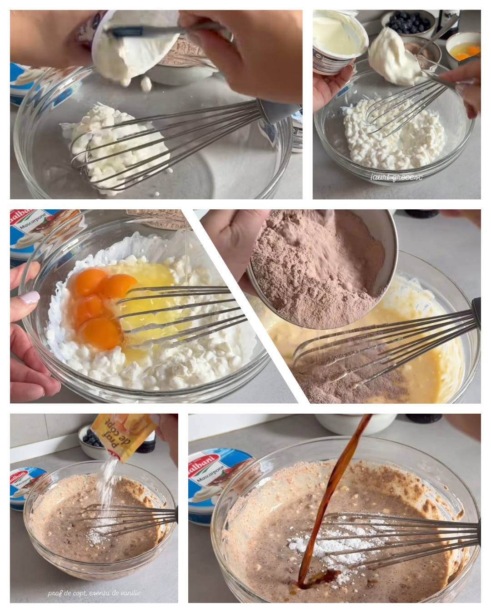
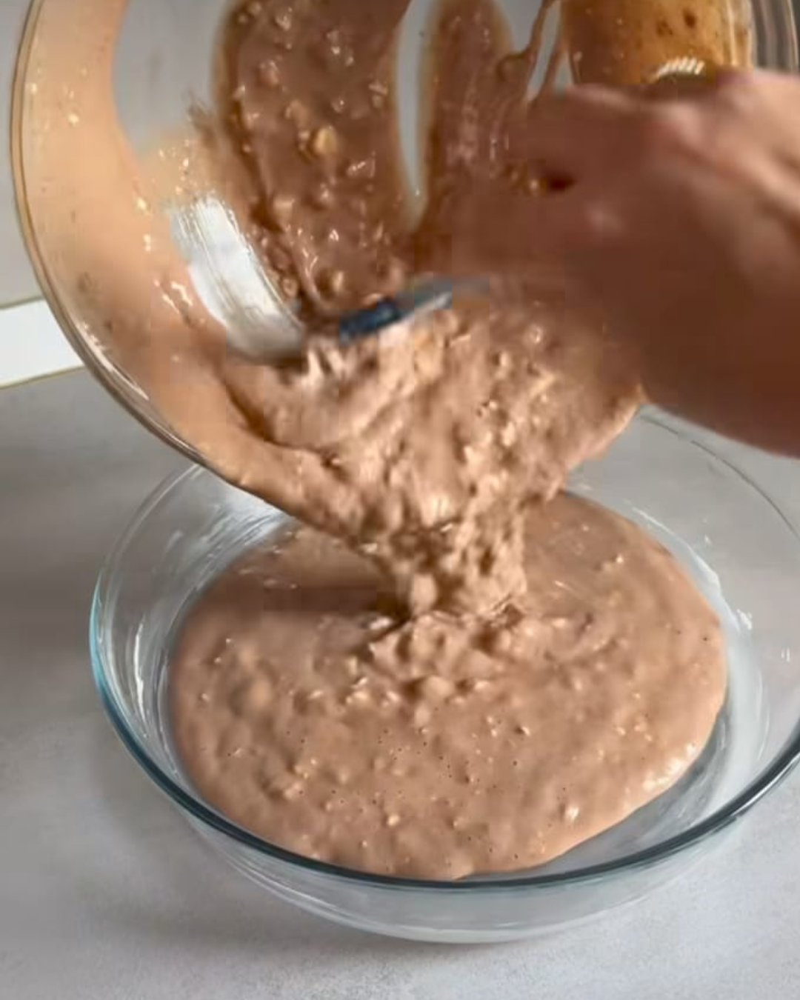
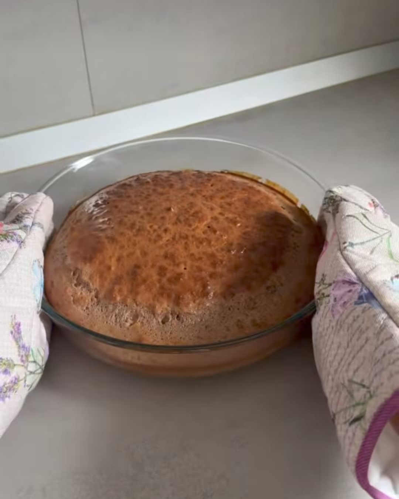
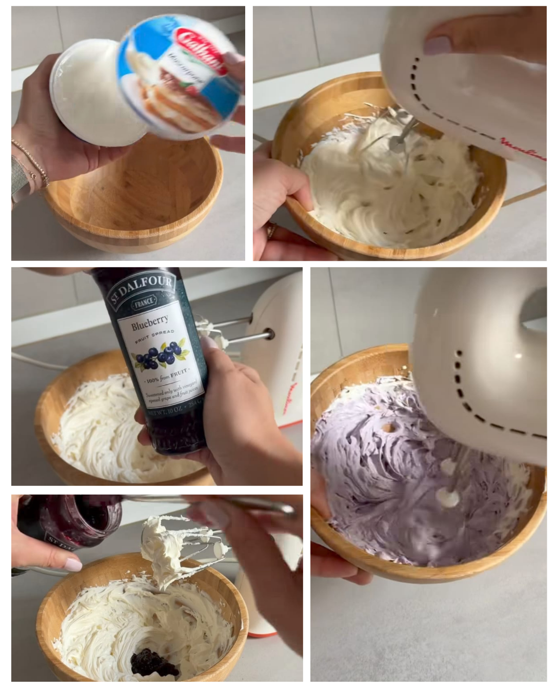
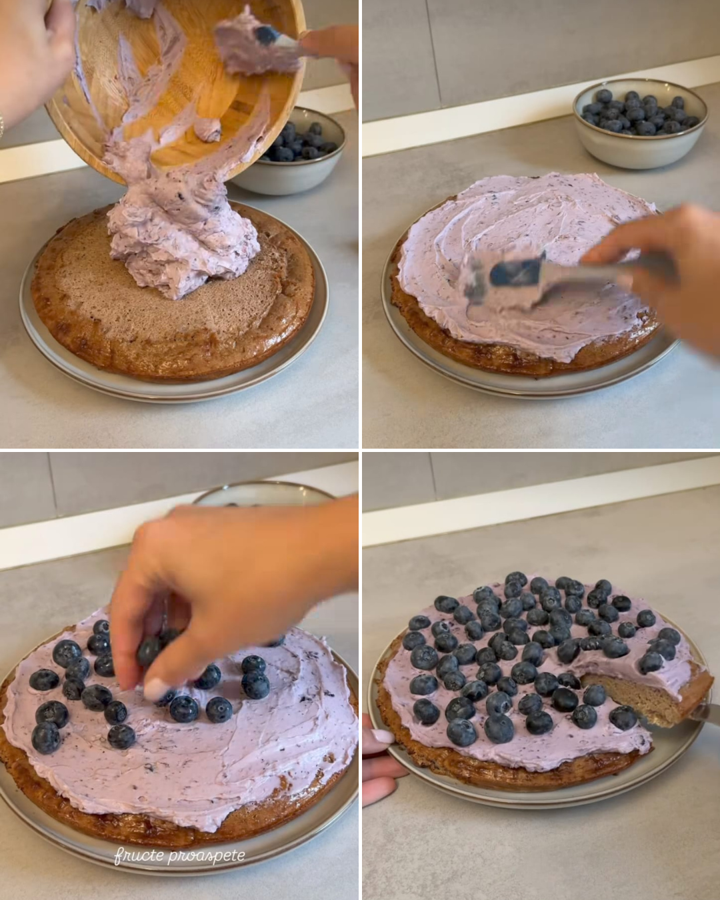

Sugar and Flour-free Protein Cake
Hi everybody, and welcome to my page.
As you know, I would like to present a new healthy dessert recipe that is delicious and friendly to your fitness goals.
Therefore, we will bake a protein cake without added sugar or flour.
Let's start, shall we?
Ingredients
For the cake:
- Cottage cheese (360-400 grams);
- 2 tablespoons Greek yogurt (10% fat);
- 4 whole eggs;
- 4 scoops of protein powder (about 110 grams);
- 1 teaspoon baking powder;
- Vanilla extract;
- Butter to grease the baking tray.
For the cream:
- Mascarpone (250 grams);
- 2-3 tablespoons blueberry jam (no added sugar);
- Fresh blueberries (for garnish).
I used the chocolate flavor protein powder from NutraPhase (the best in taste), but you can also use vanilla or any other flavor you prefer (no added sugar).
Prep and Cook Time
| Step |
Time |
| Prep time |
10 minutes |
| Baking time |
25-30 minutes |
| Cooling time |
20 minutes |
| Total time |
55-60 minutes |
Directions
- Mix cottage cheese, Greek yogurt, eggs, protein powder, baking powder and vanilla essence.

- Transfer the mixture to a pan greased with a little butter.

- Bake in a preheated oven at 180° C for 25-30 minutes. After baking, let it cool.

- For the cream, mix mascarpone with vanilla jam.

- Spread the cream over the cooled cake at room temperature, then sprinkle with fresh blueberries or other favourite fruits.

Estimated Nutritional Facts
| Nutrient |
Amount per serving |
| Calories |
210 - 230 kcal |
| Protein |
20 - 25 g |
| Fat |
12 - 15 g |
| Carbohydrates |
5 - 8 g |
| Sugars |
3 - 4 g (naturally occuring from dairy and berries) |
I hope you will try this recipe. Don't forget to send me a picture of the final result. I am curious to know what you think about it.